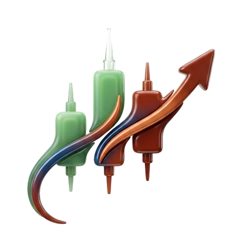

Sur 100 ans de marché, les cycles existent vraiment. Le bas exact, non.
Ici tu t'entraînes à reconnaître la zone,
à dézoomer et à fractionner tes entrées.
Données réelles : S&P 500 depuis 1950, Nasdaq depuis 1971, Bitcoin depuis 2010.
L'actif et les dates restent masqués jusqu'au reveal.
Chargement…
Outil d'entraînement pédagogique. Aucune recommandation d'investissement.